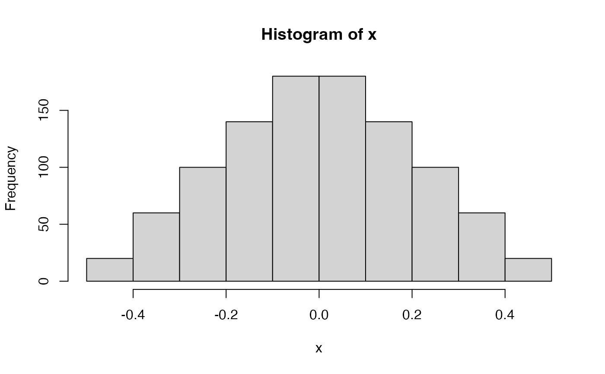
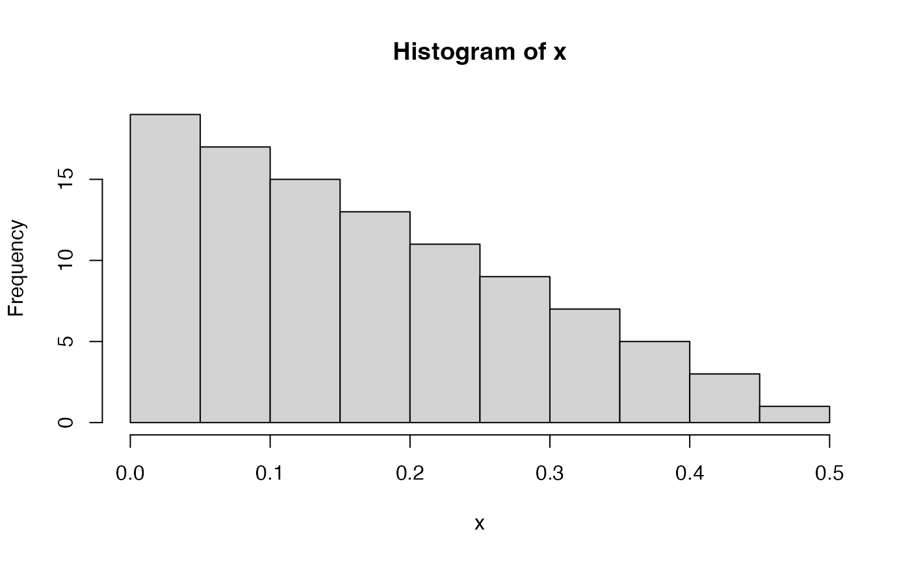

This function generates a triangular distribution on the interval from lower to upper bounds with a a given mode,
Examples
rtriangular_dist(100, -1, 0, 1)
#> [1] -0.85857864 -0.80000000 -0.75505103 -0.71715729 -0.68377223 -0.65358984
#> [7] -0.62583426 -0.60000000 -0.57573593 -0.55278640 -0.53095842 -0.51010205
#> [13] -0.49009805 -0.47084974 -0.45227744 -0.43431458 -0.41690481 -0.40000000
#> [19] -0.38355860 -0.36754447 -0.35192593 -0.33667504 -0.32176700 -0.30717968
#> [25] -0.29289322 -0.27888974 -0.26515308 -0.25166852 -0.23842269 -0.22540333
#> [31] -0.21259921 -0.20000000 -0.18759616 -0.17537887 -0.16333997 -0.15147186
#> [37] -0.13976747 -0.12822021 -0.11682391 -0.10557281 -0.09446149 -0.08348486
#> [43] -0.07263815 -0.06191685 -0.05131670 -0.04083370 -0.03046403 -0.02020410
#> [49] -0.01005051 0.00000000 0.01005051 0.02020410 0.03046403 0.04083370
#> [55] 0.05131670 0.06191685 0.07263815 0.08348486 0.09446149 0.10557281
#> [61] 0.11682391 0.12822021 0.13976747 0.15147186 0.16333997 0.17537887
#> [67] 0.18759616 0.20000000 0.21259921 0.22540333 0.23842269 0.25166852
#> [73] 0.26515308 0.27888974 0.29289322 0.30717968 0.32176700 0.33667504
#> [79] 0.35192593 0.36754447 0.38355860 0.40000000 0.41690481 0.43431458
#> [85] 0.45227744 0.47084974 0.49009805 0.51010205 0.53095842 0.55278640
#> [91] 0.57573593 0.60000000 0.62583426 0.65358984 0.68377223 0.71715729
#> [97] 0.75505103 0.80000000 0.85857864 1.00000000
#> attr(,".label")
#> [1] "rtriangular_dist(100, -1, 0, 1)"
#> attr(,"class")
#> [1] "rtriangular_dist"
x <- rtriangular_dist(n = 1000, lower = -0.5, mode = 0, upper = 0.5)
hist(x)

x <- rtriangular_dist(100, 0, 0, 0.5)
hist(x)
